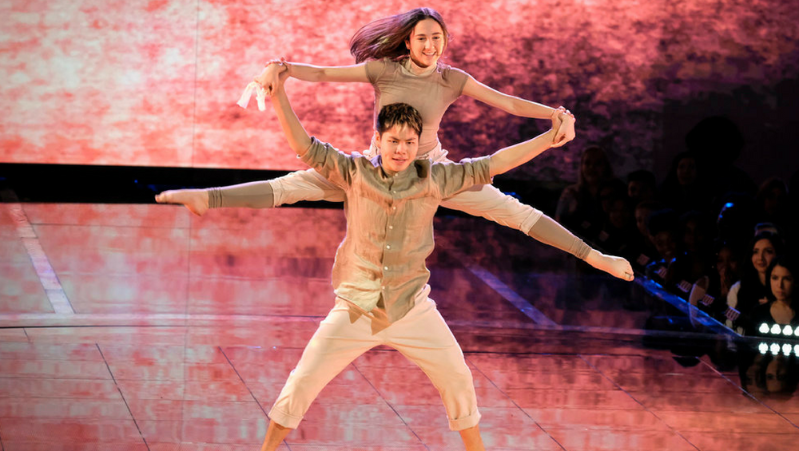
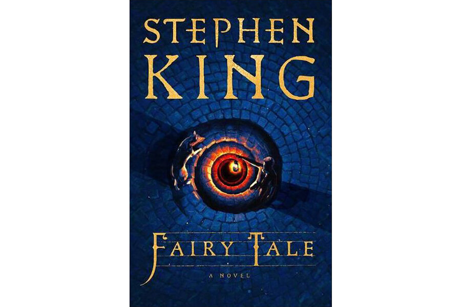

home
inspiration
top fives
im graciella velasco
these are a few of my favorite artists
sean lew

his choreography is always in touch with the music.
he has so much dance background in hip hop and contemporary.
his movements are always so smooth and he's always telling a story.
his dances were always inspiring and i would often see myself
imitating his style of dance.
daniel caesar

he is a canadian singer and R&B songwriter. he is very wellknown
for his music and many people find his music relaxing. it's filled
with romantic vibes and is referred to as simping music,
a term used by gen-z.
stephen king

he is an author known for his style of writing horror books. a lot of
his books are written in such detail that it can give someone nightmares.